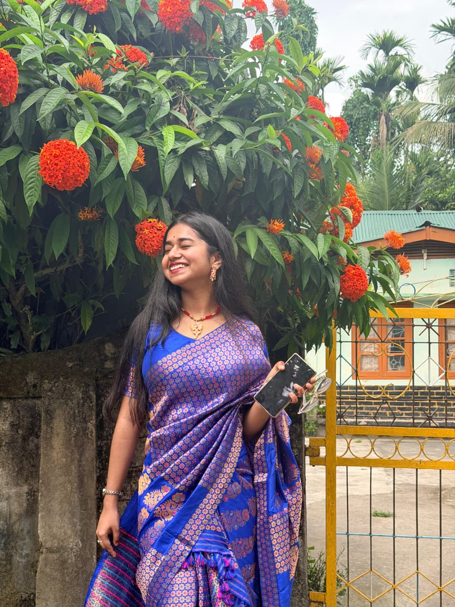
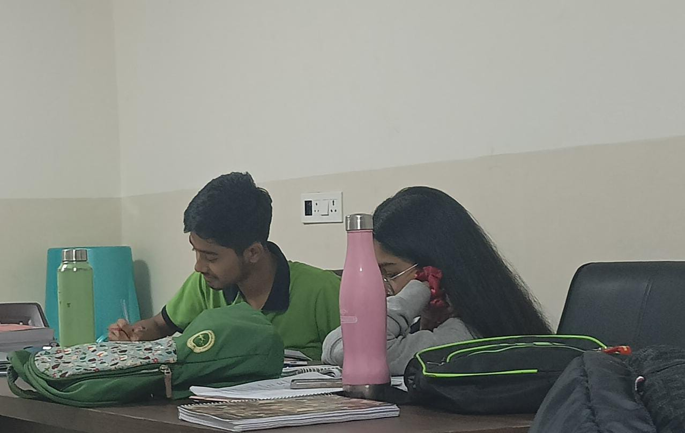
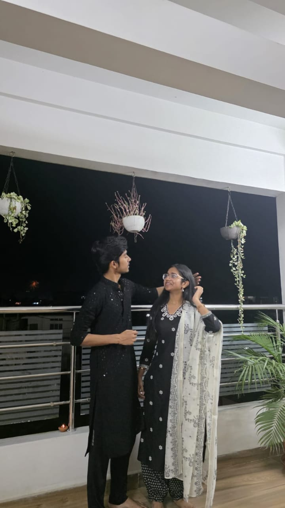

Your energy.
That shiny, cute, impossible-to-ignore ball of energy. Your wiggling dance. Your laughter. The way you can turn an ordinary moment into something I want to remember.
Some things are too beautiful to fit inside a message. So I made you a little place instead.
You have this infectious, positive, child-like energy that somehow makes the hardest things look effortless. You are childish, yet wise. Soft, yet strong. You wish well for everyone around you. And somehow, just one glance at you makes life feel a little easier.


That shiny, cute, impossible-to-ignore ball of energy. Your wiggling dance. Your laughter. The way you can turn an ordinary moment into something I want to remember.
You genuinely wish well for the people around you. Your intentions are pure. You don't need an audience to be kind, and I think that says everything about you.
You are childish and wise at the same time. Cute enough to make me smile for no reason, and mature enough to make me look at myself differently.
And yes, jaan, I have to say it. Your beauty is undeniable. But the strange thing is, the more I know you, the less your beauty feels like the most beautiful thing about you.
You can't really be categorised with ordinary women. You are your own little contradiction — a shiny cute ball of energy, somehow carrying a depth and maturity that keeps surprising me.
The childish side of you that makes me smile without even trying.
Your wiggling dance — one of those tiny things that somehow became one of my favourite things in the world.
The way a single glance at you can make life seem easier.
The fact that you never had to seek attention. Somehow, you were the only person I couldn't force myself to look away from.

I always had the wrong notion of myself, until I met you. You made me know myself better. You made me more secure, more sensitive, more human — a better person overall.
You are the best, and you so deserve the best. So I'm trying, every day, to become the person you deserve.
I met you by God's grace. I had known you since fifth standard, but somewhere around eleventh standard, from our first proper introduction, something in me simply changed.
You never asked for attention. You never needed to. I just couldn't make myself look away from you.
And today, when I look at you, I don't just see the girl I fell in love with. I see the person who helped me become someone I am happier to be.
Thank you for being exactly who you are, jaan. Please never lose that little girl inside you — the one who dances, laughs, loves purely and makes difficult things look easy.